Quick start
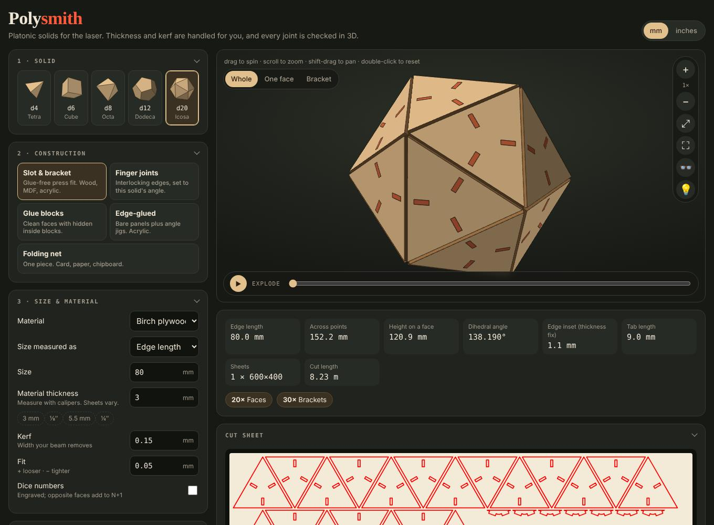
- Pick a solid: d4, d6, d8, d12 or d20.
- Pick a construction: start with Slot & bracket for wood, or Finger joints if you want no loose parts.
- Measure your sheet with calipers and type in the thickness. This number matters more than any other.
- Set your kerf. 0.15 mm is a good starting guess for a 100 W CO₂ laser in 3 mm ply.
- Spin the 3D model and slide Explode to check the parts go together.
- Press Download everything (.zip), open the SVG in LightBurn, and cut.
1 · Solids
There are five buttons, one for each Platonic solid. Each is labelled with its dice name (d4 to d20) and its shape name. Change solids at any time and every other setting stays put.
| Solid | Faces | Dihedral angle | Notes |
|---|---|---|---|
| Tetrahedron (d4) | 4 triangles | 70.5° | Sharpest joint. With bevelled teeth it needs the steepest jig. |
| Cube (d6) | 6 squares | 90° | The only one with square edges, so it needs no bevel at all. |
| Octahedron (d8) | 8 triangles | 109.5° | |
| Dodecahedron (d12) | 12 pentagons | 116.6° | Lovely as a lamp. |
| Icosahedron (d20) | 20 triangles | 138.2° | The flattest joint. It shows gaps the most, so use bevelled teeth. |
2 · Construction
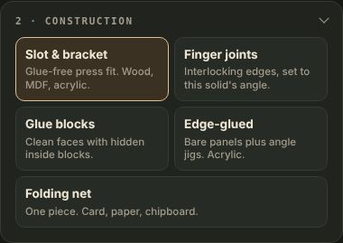
Slot & bracket
Each face gets slots near its edges. Small brackets push into the slots on two neighbouring faces and lock them together at exactly the right angle. Each bracket's tabs run straight along its face's direction, so even the last face drops straight in. It's glue-free, so it suits wood, MDF and acrylic.
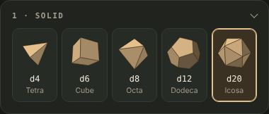
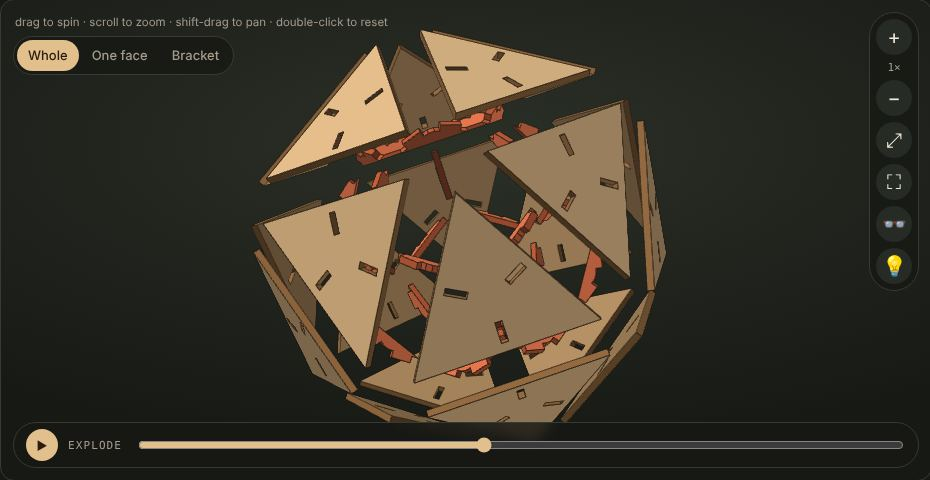
Under Bracket tuning you can set 1, 2 or 3 brackets per edge, the tab length, and how far a tab stands proud of the outside face. Leave the tabs proud if you'd like to sand them flush afterwards.
Finger joints
The edges interlock like a box joint, at the solid's own angle. Every face is identical, so you can't put one in the wrong place. Choose a Teeth style:
- Flush (square cut). Square teeth trimmed so the outside is clean. There are small V-gaps on the inside. It's fine for cubes and good enough for most things.
- Full (sand flush). The teeth are left long. Sand the outside flat after glue-up.
- Bevelled (tightest, needs jig). The teeth are cut at the true joint angle, so they close with no gaps, even on a d20. This needs the bevel jig.
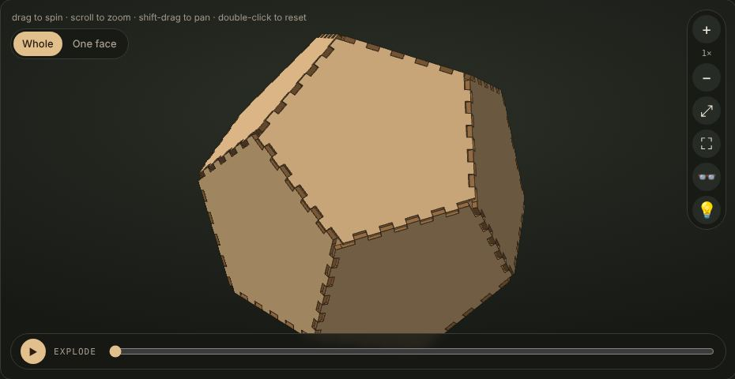
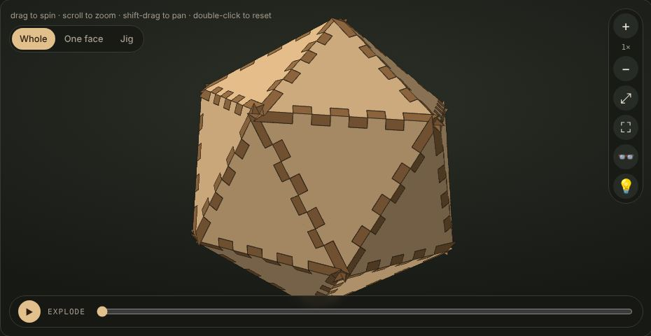
Glue blocks
The faces are bare on the outside. Small angled blocks glue in behind each edge, so you get clean faces with all the structure hidden.
Edge-glued
These are plain panels, inset so the thickness works out, plus printed angle jigs that hold two faces at the right angle while the glue sets. Best for acrylic with solvent cement.
Folding net
The whole solid comes out as one flat piece with glue tabs. Fold lines go on the blue score layer, or you can choose a perforated cut. For card, paper and chipboard. In this mode the slider under the 3D view says Fold and folds the net up live.
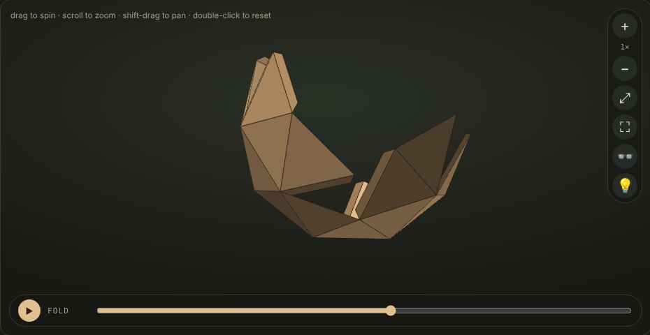
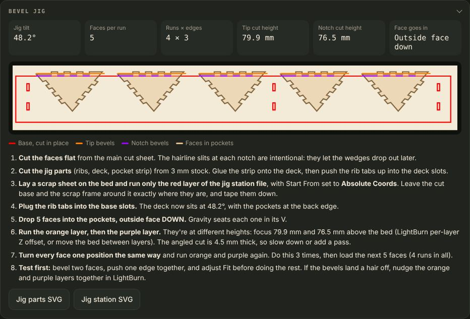
3 · Size & material
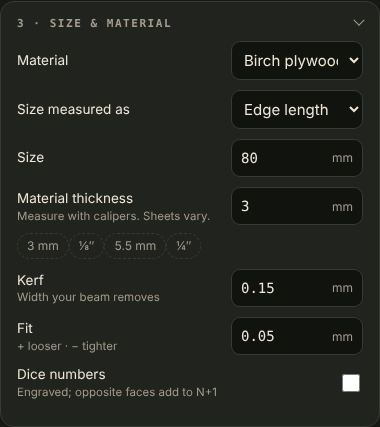
- Material: birch ply, MDF, bamboo ply, walnut, clear/frosted/coloured/black acrylic, or cardstock. This changes how the 3D model and lamp mode look. Coloured acrylic gets a colour picker.
- Opacity appears only for see-through materials (clear, frosted, coloured). Lower it to let more light through in lamp mode.
- Size measured as edge length, across the points (the size of the ball it fits in), or height when it sits flat on a table.
- Material thickness: measure it, because a "3 mm" sheet is often 2.7 mm or 3.2 mm. The chips fill in common sizes.
- Kerf: how wide your beam cuts. Polysmith offsets every slot and tooth by half of it.
- Fit: a positive number loosens the joints and a negative one tightens them. Nudge it by 0.05 mm at a time.
- Dice numbers engraves 1…N on the faces, with opposite faces adding up to N+1, like real dice.
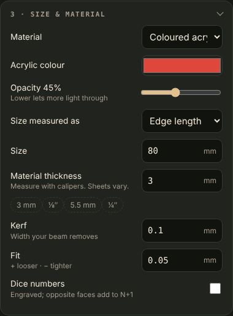
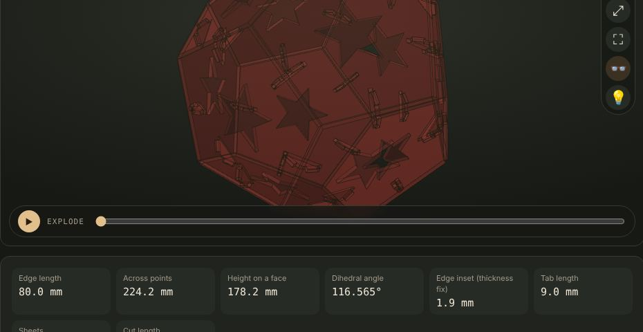
4 · Cut-outs & patterns
Holes cut into every face. They're great for lamps and to save weight.
- Windows: a single circle, polygon or star. Size sets how much of the face it takes up.
- Patterns: dots, honeycomb, diamond lattice, Voronoi cells, starfield, sunburst, rings, moon & stars, and flower. Density sets how many holes; Bridge width sets the thinnest strip of material left between them.
Polysmith keeps every hole clear of the edges, slots and teeth, so nothing falls out and the joints stay strong.
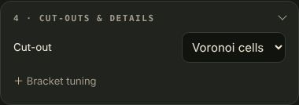
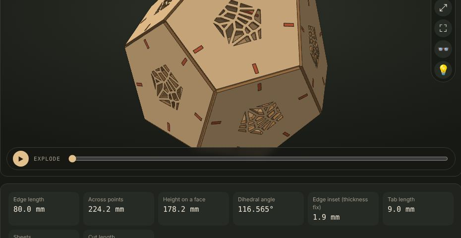
Artwork on the faces
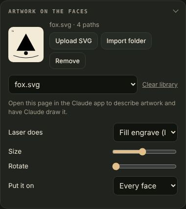
- Upload SVG puts any SVG on the faces. It's centred on each face automatically and scaled to fit, even if the drawing sat off to one side of its page.
- Import folder loads a whole folder of SVGs into the drop-down library, so you can flick between designs. Clear library empties it.
- Draw it: when Polysmith is open in the Claude app, describe a picture (for example, "a fox curled up asleep, woodcut style") and Claude draws an SVG made for the laser.
- Laser does: Fill engrave (black layer), Line engrave (green layer) or Cut through, which makes a stencil.
- Size, Rotate, and Put it on every face or just one.
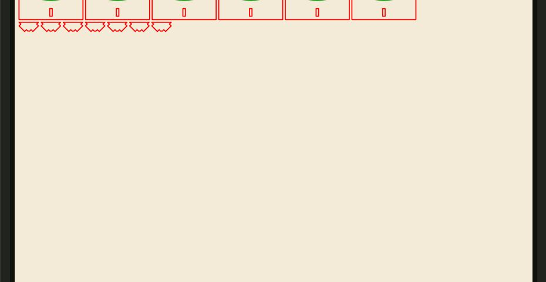
The 3D view
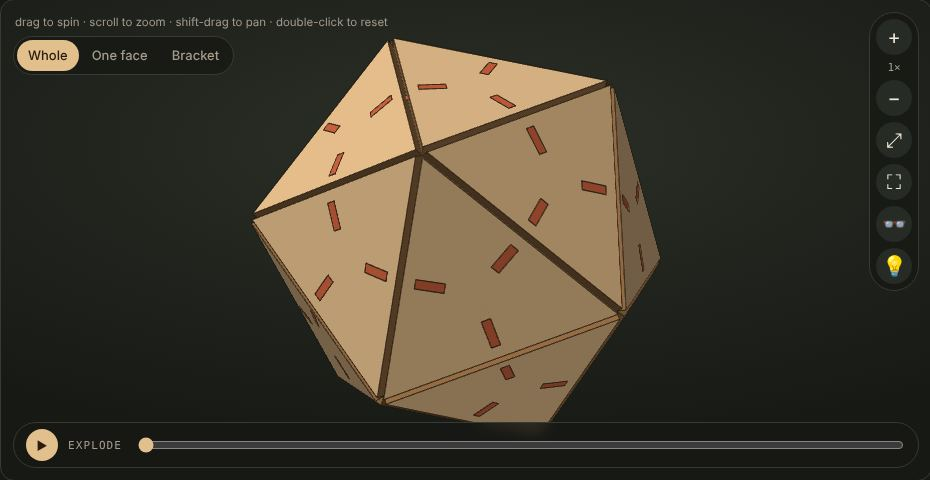
| Do this | To |
|---|---|
| Drag | spin |
| Scroll / pinch | zoom |
| Shift-drag / two fingers | pan |
| Double-click | reset the view |
+ − ⤢ | zoom in, zoom out, fit |
⛶ | full screen |
| 👓 | stereo 3D |
| 💡 | lamp mode |
| ▶ and the slider | explode the parts apart (or fold up the net) |
The buttons along the top choose what you're looking at: Whole (the full solid), One face, Bracket (a single piece, to check its shape) and Jig (the bevel jig, when bevelled teeth are on).
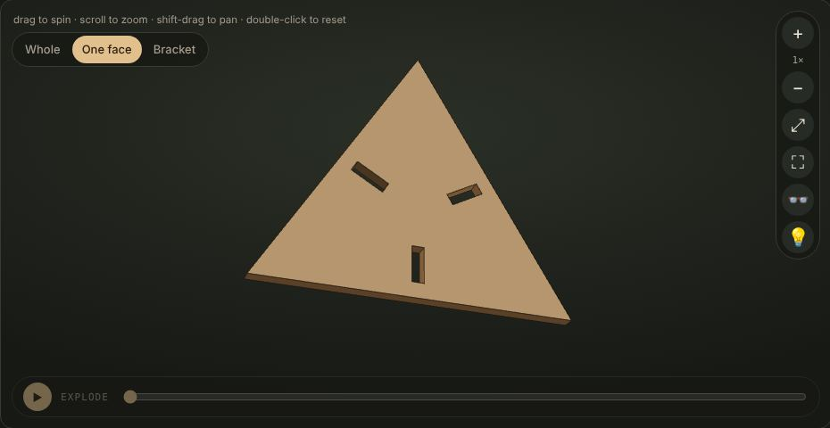
Stereo 3D
The 👓 button shows two views side by side, so the model pops out in real 3D with no glasses. It always starts in Cross-eyed mode.
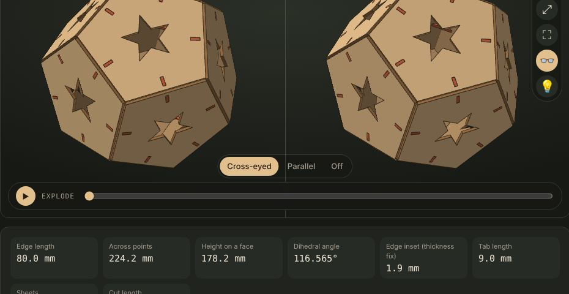
- Cross-eyed: hold a fingertip halfway between your eyes and the screen. Look at your finger until the two pictures behind it merge into a third one in the middle, then move your finger away and keep looking.
- Parallel: relax your eyes as if looking through the screen at a far wall (like a Magic Eye picture). This works best in a small window.
- Off goes back to one view.
Lamp mode
Press 💡 to put an LED in the middle of the model and close it inside a room. Light streams through every cut-out, pattern and stencil and throws shadows on the walls, floor and ceiling, so you'll see how your lamp looks before you cut it. Only the model turns; the room stays still and fills the window.
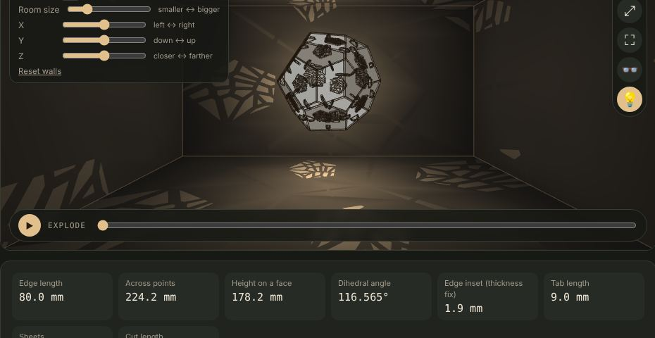
- Light: brightness, 0–300%.
- Colour: pick any colour, or tap a preset swatch (warm white, cool white and so on).
- Room size: moves the walls closer or further away. Close walls give sharp, big shadows.
- X / Y / Z: moves the room around the lamp, as if hanging it off-centre.
- Reset walls puts everything back.
Bevel jig
Bevelled teeth need the tooth tips and notches cut at an angle. A laser cuts straight down, so instead we tilt the sheet. The jig is a ramp of laser-cut supports that holds your face blank at exactly the right tilt for this solid.
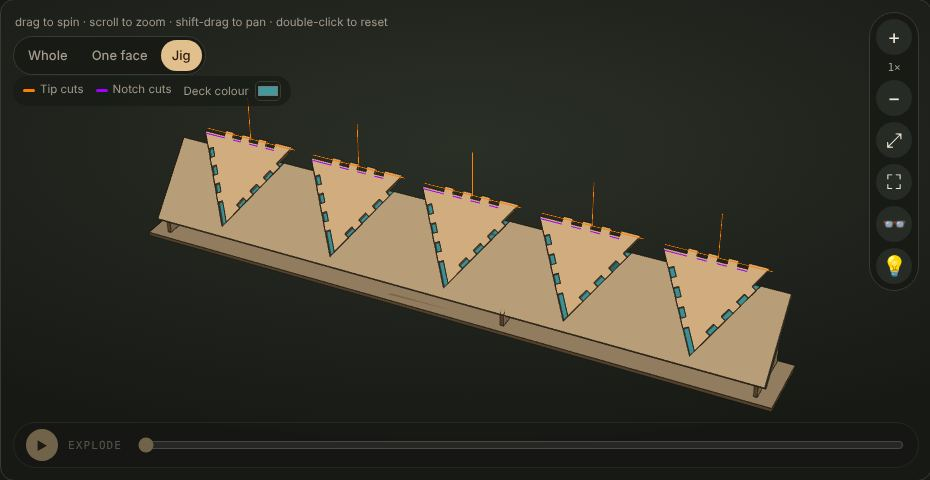
- Cut all the faces flat as normal (the red layer).
- Cut the jig parts from the Jig sheet and glue the ramp together.
- Cut the jig's base plate in place and don't move it. The bevel lines then line up with the laser. In LightBurn use Absolute Coords for the jig files.
- Set each face on the ramp in its pocket. The Bevel jig card says whether the outside face goes up or down; for d8, d12 and d20 it's outside face down.
- Run the orange (tip) layer, then the purple (notch) layer, with the focus set for the tilted surface.
Cut sheet & downloads
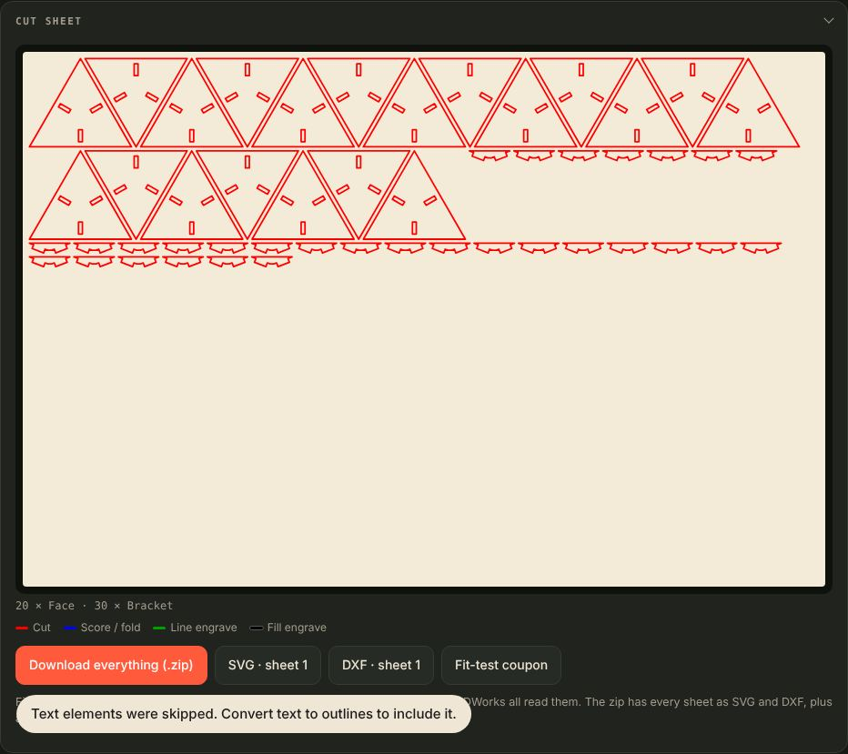
| Colour | Layer | Laser setting |
|---|---|---|
| Red | Cut | Cut through. Do this last. |
| Blue | Score / fold | Light cut, part way through. |
| Green | Line engrave | Fast, low-power line. |
| Black | Fill engrave | Scan / fill. |
- Download everything (.zip) gives every sheet as SVG and DXF, plus a README with the settings you used.
- SVG / DXF gives just the sheet you're looking at.
- Files are in millimetres at 1:1 with hairline strokes. LightBurn, Glowforge, xTool and RDWorks all open them.
- Sheet settings: stock size (presets or custom), part spacing and edge margin.
Export and import settings
Export settings (at the bottom of the Sheet card) saves everything as a small JSON file. That covers every setting, the artwork on the faces, the 3D view and lamp, and your artwork library. Import settings loads it back. Use it to keep a recipe for a lamp you liked, move a design to another computer, or send it to a friend.
Below the cut sheet, the Assembly card gives step-by-step build instructions for the mode you've chosen.
Tips & troubleshooting
Joints are too loose
Lower the Fit setting (try −0.05) or raise the kerf a little. Then re-measure your thickness.
Joints are too tight or won't go in
Raise Fit by +0.05. Plywood swells in humid weather, and MDF crushes, so it forgives more.
Gaps on the outside of a d20 or d12
That's square teeth meeting at a wide angle. Switch the teeth to Bevelled and use the jig, or choose Full and sand flush.
My SVG is off-centre, tiny or missing parts
Polysmith centres and scales it automatically. If parts are missing, convert text and strokes to paths in Inkscape (Path → Object to Path, then Stroke to Path).
"Draw it" isn't there
Claude drawing only works when Polysmith is opened inside the Claude app. On the GitHub Pages copy, upload an SVG instead.
The 3D buttons disappeared
They faded to 1%, but they are still there. Tap where they were to bring them back.
Start over
Reset everything at the bottom of the Sheet card. Your settings are otherwise remembered between visits.
For programmers: the API
Everything Polysmith does can also be done from code. You can build designs, write the SVG, DXF and zip files, add artwork, render pictures (lamp mode included) and drive this page. In the browser console it's window.Polysmith; in Node it's polysmith-api.js.
Try it in the console:
Polysmith.browser.updateSettings({ solid: 'dodeca', window: 'voronoi' })Polysmith.browser.view({ lamp: { gain: 2 } })
The full reference is API.md on GitHub.